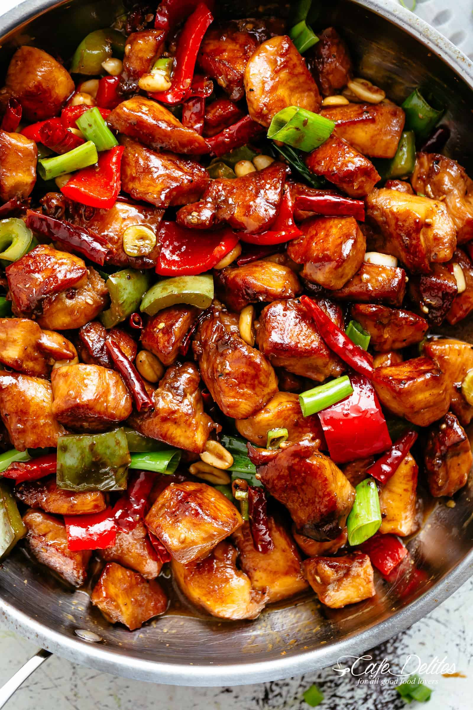

Kung Pao Chicken

Ingredients
To Marinate
- 12 oz chicken breast
- 1 tsp vegetable oil
- 1 tsp cornstarch
- 1 teaspoon shaoxing wine (sub mirin)
- pinch of salt
- pinch of white pepper
Sauce
- 1 Tbsp light soy sauce
- ½ tsp dark soy sauce
- 1 Tbsp rice wine vinegar
- 1 tsp sugar
- 3 Tbsp water
- 1 tsp cornstarch
The rest
- 3 Tbsp oil
- 3 cloves of garlic (smashed and sliced)
- 2 thin slices of ginger(minced)
- 2 dried red chilies(deseeded and chopped, adjust for spicyness)
- ½ tsp Sichuan peppercorn powder
- 6 scallions (white portions only)
- 1 red and green bell pepper
- ½ white onion
<1i>1 cup of roasted peanuts
Instructions
- Cut chicken breast into ¾ inch cubes. Mix together the chicken and all the marinade ingredients into a bowl and set aside for 20 minutes.
- Mix together all the sauce ingredients into a bowl and set aside.
- Heat 2 Tbsp of oil in a wok/pan over high heat, sear the chicken and then remove from the wok/pan and set aside.
- Turn the heat to low and add another Tbsp of oil. Add the garlic, ginger, chilies, Sichuan peppercorn powder, and scallions. Cook for a minute or two until fragrant.
- Add the chicken back to the wok/pan and turn up to high heat. Stir-fry for a minute and then stir the sauce and add to the wok/pan. Stir-fry for another minute, the sauce should thicken up quickly.
- Finally, add the peanuts. Give everything a final stir and serve.